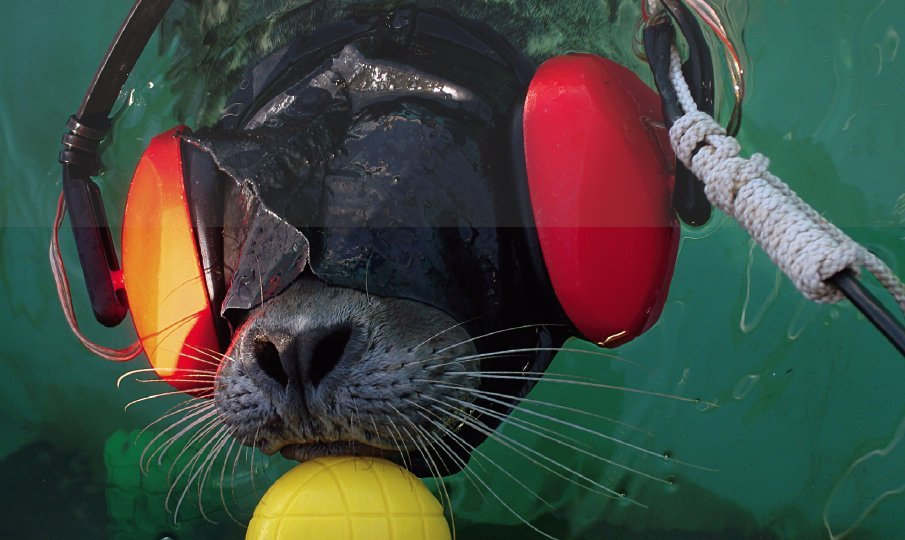

Bienvenido a las noticias del dia
Bigotes trabajando.
Desastres Naturales
 Hodonin. República Checa
Hodonin. República Checa
Foto: Cordon Press. Este tipo de tornado de "broca" es un tornado anticiclónico poco común y que representa alrededor del 2% de los tornados.
 Hope Amidst the Ashes
Hope Amidst the Ashes
Fotografía ganadora absoluta de la competición
Los incendios forestales han devastado el paisaje australiano en los últimos años, quemando unos 17 millones de hectáreas solamente entre 2019 y 2020.
 Forest Fire
Forest Fire
Fotografía finalista en la categoría: Spot News / Singles
Un niño se sienta en un coche cerca de un incendio forestal en Oliveira de Frades, Portugal, el 7 de septiembre.